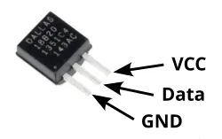

Temperature Sensor (DS18S20, DS18B20)

The DS18S20 (0.5°C precision) and DS18B20 (0.0625°C precision) are low cost thermometers. They are available packaged in a waterproof probe, making them a popular choice for measuring fluid temperature or in outdoors environment.
These sensors uses the 1-wire bus to communicate. The 1-wire bus allows multiple devices to be connected to the same data wire, so you could potentially connect a dozen sensors using just one pin on your microcontroller.
IoTy provides an EZ DS18X20 extension to read these devices, but you can also use micropython's built-in module to read them.
Pins

| Pin | Description |
|---|---|
| VCC (Red) | Power for the sensor. Connect to 3V3. |
| GND (Black) | Ground pin. This should be connected to the GND pin on the ESP32. |
| DATA (Yellow/White) | Data. This should be connected to an output capable pin on the ESP32. |
Wiring
Note the 4.7kΩ resistor that is connected between 3V3 and the data line (Pin 4).
You can connect multiple units of this temperature sensor to the same pin on the ESP32.
Code
This code will display the temperature once every second.
Blocks

If you have a second sensor connected to pin 4, you can read it by specifying 1 as the sensor number.
The order of the sensors is dependent on their internal ID and will not change, but the first time you run it, you'll need to test to determine which is sensor 0 and which is sensor 1.
Python
import ez_ds18x20
import time
ds_device = ez_ds18x20.DS18X20(4)
print(ds_device.device_count())
while True:
ds_device.convert_temp()
print(ds_device.read_temp(0))
time.sleep(1)
The ez_ds18x20 module provides a thin wrapper over the ds18x20 module built into micropython.
You can also use the built-in ds18x20 module directly; refer to the micropython documentations.
Results
You should first see the number of connected device printer on the monitor, followed by the temperature (Celsius) once every second.
class DS18X20 - control DS18S20 and DS18B20 temperature sensors
Constructors
ez_ds18x20.DS18X20(pin)
Creates a DS18X20 object.
The arguments are:
pinAn integer specifying the microcontroller pin that the sensors data lines are connected to.
Returns a DS18X20 object.
Methods
DS18X20.device_count()
Returns the number of connected sensors.
Note that sensors are scanned for during object construction, so hotplugged devices may not be detected.
Returns an integer representing the number of connected sensors.
DS18X20.convert_temp()
Performs a temperature measurement. This should not be performed more than once every 750ms.
Returns None.
DS18X20.read_temp(i)
Returns the temperature measured during the last convert_temp().
The arguments are:
iAn integer specifying the device index (...starting from0). This is based on the device's internal ID, so the order will not change (...unless you add or remove devices). You will however need to test to determine which sensor correspond to which index the first time you run it.
Returns a float representing the temperature in Celsius.